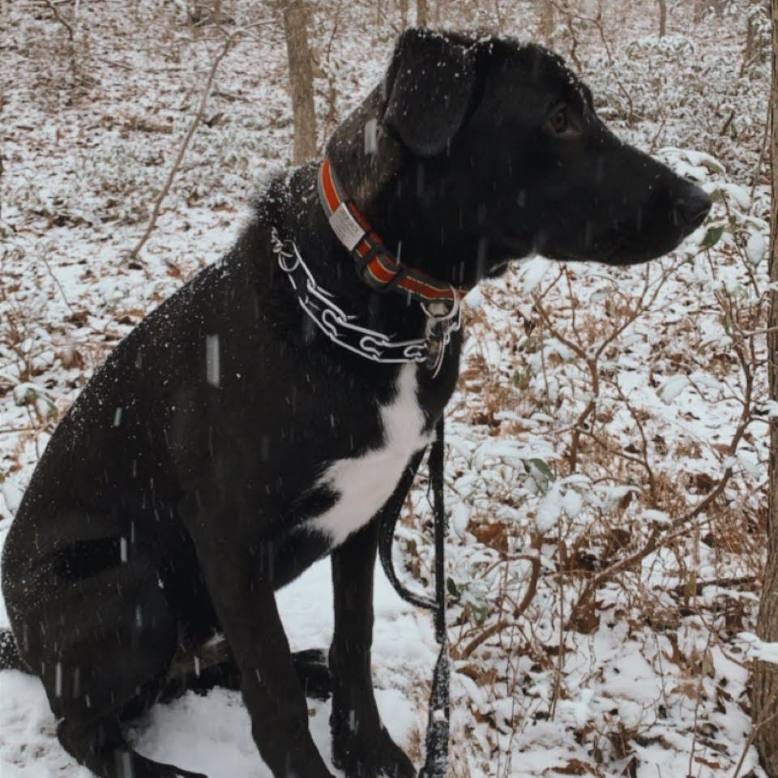
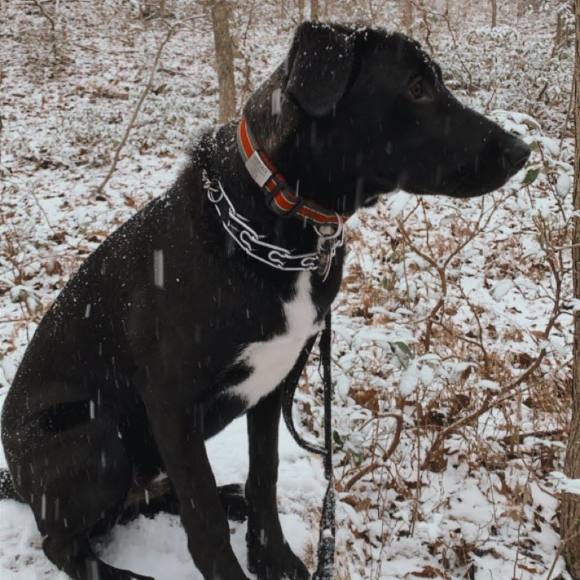

Jack-Jack
Age: 3 | Height: 4'4" | Weight: 82lb
Jack-Jack is the epitome of a quarantine puppy. He is playful and gentle, but definitely prefers having all of us together. His only fears are the dark and small children. He is equal-ish parts Black Lab, German Shepherd, Pit Bull, and mutt. He was fostered by our close friends in 2020 and has been in our family ever since. His favorite color is red.
 
